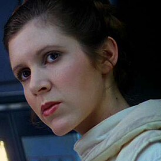

Люк Скайуо́кер (англ. Luke Skywalker) — один из главных персонажей вселенной «Звёздные войны», джедай, сын сенатора с Набу Падме Амидалы Наберри и рыцаря-джедая Энакина Скайуокера. Старший брат-близнец Леи Органы Соло. В оригинальной трилогии и трилогии-сиквеле в роли Люка снялся Марк Хэмилл.
Добро пожаловать в далёкую-далёкую галактику...
«Звёздные войны» — это эпическая история борьбы света и тьмы, которая переносит нас в удивительный мир космоса. Погрузитесь в захватывающие приключения джедаев, ситхов, контрабандистов и героев со всех концов галактики.
Обложки фильмов
Люк Скайуокер
Принцесса Лея
Лея Органа-Соло (англ. Leia Organa Solo) (имя при рождении — Лея Амидала Скайуокер) — дочь рыцаря-джедая Энакина Скайуокера и сенатора Падме Амидалы Наберри, а также сестра-близнец Люка Скайуокера. После рождения её удочерили Бейл Органа и королева Бреха, сделав её принцессой Альдераана.
